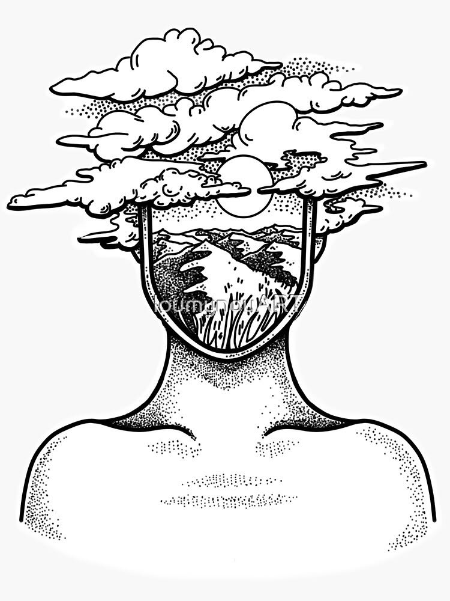

Silence intérieur
Il y a des soirs
où la lumière ne parle plus,
où même les murs respirent doucement,
pour ne pas troubler le vide.
Les pas résonnent comme des questions
qui n’attendent pas de réponse.
Les ombres s’allongent
pour tenir compagnie aux absents.
On apprend à se taire
avec élégance,
à écouter le battement du monde
depuis une chambre sans écho.
Et dans ce creux —
cet espace que personne ne réclame —
quelque chose pousse,
lentement,
comme une paix qu’on n’avait pas prévue.
Djamel Metref
At Yenni le 9 octobre 2025

← Tous les poèmes